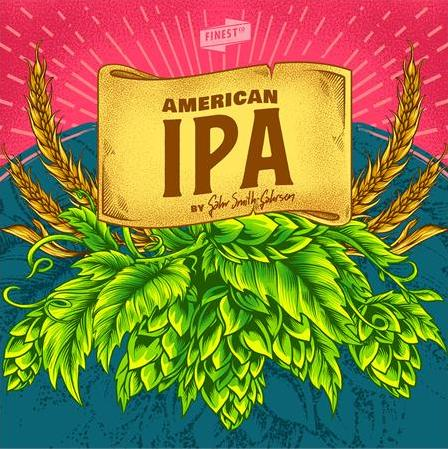

_ _ _______ _______ ____ _________ .__ __ __
__| || |_\ _ \ \ _ \/_ | / _____/ ___//| |___ _| | _________ ____ | | __ ____ ____
\ __ / /_\ \/ /_\ \| | ______ \_____ \ / _ \| |\ \/ / |/ /\_ __ \/ _ \| |/ // __ \ / \
| || |\ \_/ \ \_/ \ | /_____/ / ( <_> ) |_\ /| < | | \( <_> ) <\ ___/| | \
/_ ~~ _\\_____ /\_____ /___| /_______ /\____/|____/\_/ |__|_ \ |__| \____/|__|_ \\___ >___| /
|_||_| \/ \/ \/ // \/ \/ \/ \/

'Finest American IPA' er en klassisk amerikansk IPA
med en fin ryggrad av malt, markert bitterhet og
aroma av grapefrukt, fersken og harpiks. En suveren
IPA du ikke blir lei av og kan brygge igjen og igjen.
- - - - - - - - - - - - - - - - - - - - - - - - - - -
ABV: 5,4%
Antall flasker: 41
Bryggmester: Eirik
Bryggedag: 08.03.2021
Flasket: 22.03.2021
Drikkeklar: 06.04.2021